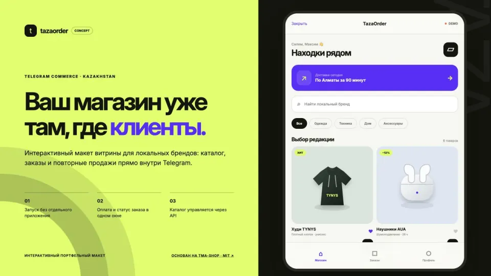

Telegram commerce · Live demo
TazaOrder: магазин внутри Telegram.
Интерактивный макет витрины для локальных брендов Казахстана: каталог, избранное, корзина, оформление и статусы заказов в формате Telegram Mini App.

Задача
Что нужно было показать
Показать, как магазин может работать внутри привычного мессенджера без отдельного мобильного приложения. Для портфолио требовался проверяемый клиентский сценарий и прозрачная атрибуция основы.
Решение
Как устроен концепт
Открытый MIT-проект tma-shop адаптирован под портфельную концепцию TazaOrder: изменены позиционирование, визуальная система, каталог и пользовательские сценарии. Исходная лицензия и авторство сохранены в репозитории.
User flow
Сценарий от входа до результата
- 01
Покупатель открывает каталог внутри Telegram.
- 02
Добавляет товары в корзину и указывает данные заказа.
- 03
В интерфейсе видит историю и статус оформления.
Решения
Почему интерфейс устроен так
- Mobile-first интерфейс для Telegram Mini App
- Минимум переходов между каталогом и корзиной
- Явная атрибуция исходного MIT-проекта
Границы
Что этот кейс не обещает
- Это портфельная адаптация открытого проекта
- Оплата и реальная доставка не подключены
- Каталог использует демонстрационные данные
Что реализовано
- Каталог и категории
- Избранное и корзина
- Оформление заказа
- Статус доставки
- История покупок
- Telegram Mini App интерфейс
Технологии
Next iteration
Что потребуется для рабочей версии
- Подключить каталог владельца бизнеса
- Добавить backend, оплату и статусы доставки
- Настроить Telegram-уведомления и повторные покупки
Похожие решения
Этот кейс показывает один конкретный сценарий. В каталоге решений собраны варианты для заявок, записи, торговли, CRM и AI-помощников.